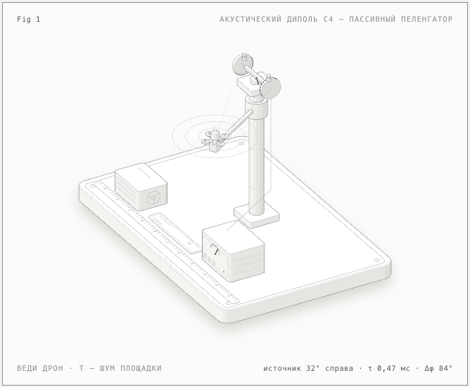

05 · Детали стенда
Три взгляда


Кадры — рендеры интерактивной 3D-модели, не фотографии макета.
Биомиметика · пассивное обнаружение
Акустический диполь C4 — направленность из геометрии, а не из мощности передатчика.
00 · Аннотация
C4 «Дифференциальный диполь» — пассивный акустический пеленгатор для обнаружения БПЛА без собственного излучения. Пара приёмных мембран на короткой базе (0,30 м) механически связана по мотивам слуха мухи Ormia ochracea: общий для обоих каналов шум площадки вычитается до решающего звена, а направление на источник вычисляется по разности прихода сигнала.
Вертикальный разнос приёмников (мотив совы) резервирует канал угла места. Устройство только принимает, ничего не излучая; отсутствие лицензионных требований к спектру — вопрос к юристу, не инженерный факт. Вычитание делает приём устойчивее к ненаправленным помехам, но помеха с направления цели и вибрации не подавляются.
01 · Идея
Акустическая локация обычно требует либо базы, сравнимой с длиной волны, либо многоэлементной решётки с цифровым формированием луча. Диполь решает ту же задачу геометрией: две мембраны на короткой базе слышат один и тот же шум, но с разными фазами. Механическая связь — как перепонки мухи Ormia — работает аналоговым вычитателем: синфазная часть гасится, разностная остаётся и несёт направление.
Ключевое следствие: слабый сигнал цели не нужно «перекричать» — его нужно отделить. Общий шум площадки, вентиляции и ветра приходит на обе мембраны почти одинаково, поэтому вычитание поднимает отношение сигнал/шум до решающего звена, а не после него.
«Парные акустические приёмники с механической/электрической связью: общий для пары шум вычитается, остаётся разностный сигнал направления; асимметричные позиции пары (как у совы — вертикальный разнос) дают 3D-оценку. SNR растёт геометрией, а не мощностью». Трек B · концепции, C4
02 · Принцип работы
Две мембраны на базе 0,30 м принимают звук винтов — сотни герц и единицы килогерц.
Общий шум площадки приходит синфазно; механическая связь вычитает его до решающего звена — принцип №2, Taking out.
Сигнал цели приходит с задержкой τ = d·sinθ/c — до ≈0,82 мс на краю сектора ±70°.
Знак и величина задержки дают направление; вертикальный разнос (мотив совы) — резерв для угла места.
03 · Демонстратор

Управление: мышь или стрелки — азимут источника; T или клик — режим общего шума; при снижении анимации — prefers-reduced-motion.
04 · Физика и числа
| Угол источника θ | Разность прихода τ | Разность фаз Δφ (500 Гц) |
|---|---|---|
| 30° | 0,44 мс | 79° |
| 42° | 0,59 мс | 105° |
| 60° | 0,76 мс | 136° |
| 70° (край сектора) | 0,82 мс | 148° |
Иллюстративные значения для базы 0,30 м; в стенде используется та же модель. Числа — ориентиры кейса [оценка], не результат измерений.
05 · Детали стенда
Кадры — рендеры интерактивной 3D-модели, не фотографии макета.
06 · Границы
07 · Трассировка ТРИЗ
Принцип: №2 Taking out — отделить (технически — вычесть) общую для каналов составляющую до решающего звена. Это единственный принцип, закреплённый за C4 в треке; формально матрица пары 37↔27 рекомендует №27, №40, №28 и №8 — C4 идёт не от неё, а от эффектового паттерна Ormia.
Эффекты: механически связанные перепонки Ormia ochracea (JASA 98(6), 1995; Nature Microsystems & Nanoengineering, s41378-022-00389-9; DTIC ADA543237); асимметричные уши совы и лицевой диск (owlpages) — вертикальный разнос и пассивное усиление; MEMS-микрофоны и машинное обучение для пассивной локализации дронов (Acta Acustica, 2026).
Патентная проверка: категория N2. Ближайшие аналоги — CN121509862A (дифференциальные решётки), WO2024147731A1 и NL2028629B1 (биомиметические микрофоны — слуховые устройства). Схем Ormia-диполя для БПЛА в проверенных базах не найдено.
08 · Материалы
Светлая и тёмная темы: dipole-light · dipole. Ведение дрона, режим шума, readout.
«Самовзводящийся купол» — второй демонстратор той же серии (в этот репозиторий не включён).
Отчёт интеграции скилла Anatomy в контур агента: отчёт. Проверки геометрии и линий.
audit passed · 31 солид · line ends 0 (обе темы) · DOM без NaN · 390 px без скролла.
09 · Источники